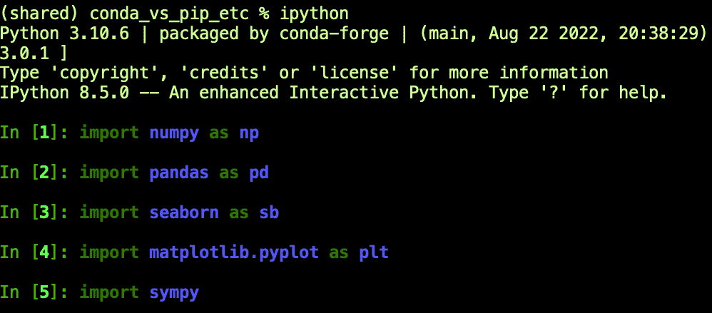
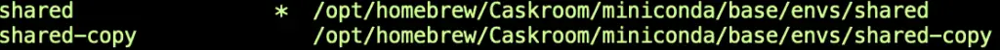
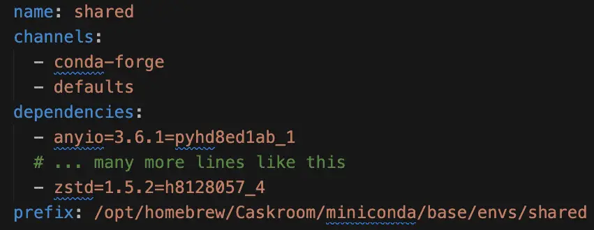

Conda vs. Pip, Venv, and Pyenv – Simplicity Wins
If you spend time on Python forums, you’ll find that even people who love Python think its package management tools are somewhat clunky compared to other languages. For example, someone once had some good-natured fun at my expense because I wrote that because SymPy is “written entirely in Python, it’s easy to install and use.”
Let me give you another symptom of Python’s tooling. More than one person has told me that they don’t use virtual environments; they just install packages using pip into their global Python environment.
In all fairness to them, that’s what I did first when I started using Python, too, even though, at the time, I already had over a decade of software development experience. In contrast, as an experienced Java developer, I would have been horrified to download jar files (Java packages) and drop them into the system-wide Java lib directory. In Java, one used Maven (at least for a time before Gradle and other Ivy-based tools muddied the waters).
Later, and for years since, I’ve used the Python venv module. Now a veteran of many requirements.txt files, I have system aliases that help me quickly create and activate virtual environments. Flushed with the pride of thinking one has ceased to do it wrong, I wrote about How to Install Python Packages the Right Way.
As any cat skinner will tell you, however, there’s more than one right way to do it. This post will share the way I prefer now and why.
Moving to Conda
“The nice thing about standards is that you have so many to choose from; furthermore, if you do not like any of them, you can just wait for next year’s model.”
Getting Started With Conda
If you’re interested in trying out Conda, I recommend Miniconda unless you have a strong need to get Anaconda. The difference is that Anaconda is a massive Python distribution with a huge set of tools pre-installed. Miniconda lets you select which of those tools you need, based on the same “conda” command line tool that Anaconda uses. Once Miniconda is successfully installed, you should be able to run “conda info” or “conda --version” to verify you can see it on your path.
Incidentally, you don’t already need Python installed to do this (but it’s OK if you do). Miniconda comes with a version of Python along with the libraries it needs to run. It also lets you install Python (and other tools), in addition to installing Python packages. Conda will isolate these from your “global” Python, so you won’t have to worry about conflicts.
Conda vs. Other Tools
In the title, I told you this post would be a comparison of Conda with Pip, Venv, and Pyenv. This may seem like an unfair fight, three against one and all, but let me assure you, this match is more balanced than it looks.
Like Pip, Conda can install packages, and as we go forward, we will discuss the pros and cons of each as a package management tool.
Like the Python venv module, Conda lets you create and manage isolated environments and save the dependencies for that environments with other developers.
Finally, like PyEnv, Conda can install and keep separate versions of Python, so you can work out different versions or experiment with later releases.
As you can see, Conda’s strength is that it handles tasks that would otherwise be three different tools to accomplish.
You may be familiar with the Unix philosophy of having a collection of small tools that each do a single job well. In that case, you might think that a monolithic “Swiss-army knife” tool like Conda may involve some unacceptable tradeoffs. On the contrary, my experience with Conda has been that, on balance, Conda improves the work rather than degrades it.
To show you what I mean, we’ll first go over the tools mentioned – Pyenv, Venv, and Pip – to see how it compares to Conda. In each section, we’ll give the pros and cons of the tool in contrast with Conda. Although this article is heavily opinionated toward the “just use Conda” use case, I want to be as fair as possible to the alternative possibilities.
Next, we’ll go through a brief Conda tutorial that will teach you the basics of creating and using Conda environments.
The first tool I want to discuss is the one whose quirks led me to consider Conda in the first place, PyEnv.
Conda vs. PyEnv
Some Background
Like Conda, pyenv lets you manage multiple Python versions. For example, if you have a project on an older Python version, let’s say 3.4, but you want to experiment with the later features of 3.10, pyenv lets you switch between them. In this respect, a helpful feature of pyenv is that you can set a version globally (let’s say you usually want 3.10), but then for the project that uses Python 3.4, you can create a file with the name, “.python_version”. With that file containing the correct version, you’ll use that version when you run Python from anywhere underneath that project root folder.
Before moving to Conda, I had used pyenv for some time and was pretty happy with it. However, the pain point that finally led me to explore Anaconda was an annoying problem with pyenv. At the time, I had several JupyterLab environments available on my machine, with the packages installed with pip and the virtual environments managed with venv. What I often noticed is that I would try to run jupyter lab with a virtual environment activated, and I would get an error, even though I knew it was available in that environment.
It turned out that a shell script named “jupyter” inside the pyenv shims directory was the culprit. This file was taking precedence over my virtual environment. Deleting it from the shims directory or even deleting the whole directory didn’t help. Pyenv recreated the shims directory, presumably every time the shell re-evaluated my .profile file and ran init. I like my zombies in the movies; I like them far less in my development tools.
Finally, in disgust, I commented out these lines of my .profile file, which I share with you here before deleting them:
#export PYENV_ROOT="$HOME/.pyenv"
#export PATH="$PATH:$PYENV_ROOT/bin"
#eval "$(pyenv init --path)"
#eval "$(pyenv init -)"
Conda vs Pyenv: Pros and Cons
Pros of Pyenv Compared to Conda
# From your terminal
docker run -it python:3.11.0rc2-bullseye bash
# ...
# From the bash prompt that comes up when docker starts
python --version
# Output: Python 3.11.0rc2
Pros of Conda Compared to Pyenv
Unlike pyenv, Conda is more than just a tool for managing Python versions. It also handles virtual environments and installing packages. Because of this, the kind of conflict that could happen with those pyenv shims is impossible in Conda or at least far less likely.
I hesitated to conclude that a monolithic tool can be superior to a collection of small tools that each does one thing well. But having shims that repeatedly broke what should be a simple virtual environment configuration was finally too much of a mess.
You have to be a die-hard tool-lover to appreciate pyenv and the plugins for it. Consider, for example, the following excerpt from the pyenv-virtualenv README on GitHub:
pyenv-virtualenv is a pyenv plugin that provides features to manage virtualenvs and conda environments for Python on UNIX-like systems. … (NOTICE: If you are an existing user of virtualenvwrapper and you love it, pyenv-virtualenvwrapper may help you (additionally) to manage your virtualenvs.)
This amounts to taking a tool that manages Python installations, then installing a plugin into it so you can manage virtual environments, including those managed by Conda. But Conda already handles all these things without pyenv or a plugin.
Conda vs. Venv
Pros and Cons of Conda vs Venv
Having a tool that comes with Python is a significant advantage. The biggest strength of Python’s venv module is that it has been part of core Python since 3.3. Venv allows you to create and manage virtual environments so that the packages you install (typically using pip) remain separate from your global Python environment.
One difference between Venv and Conda is that they store environments in different places (by default). Conda creates environments as named folders in a shared location. (You can discover where that is with the command conda info --base).
In venv, on the other hand, these environments are generally stored along with your project files in a separate folder, commonly named .venv or venv. This makes it easy to find the root of the installed libraries if you want to browse through the code. On the negative side, however, it has several minor disadvantages:
Because the destination name and the module name are often the same, new users might be confused. Consider what a beginner might make of this:
python -m venv venv. If that’s obtuse to you, the first venv is the module name, and the second is a path we’re passing to it as an argument.The commands to activate environments are different in Windows and Linux-like environments.
If you use
.venvas the directory name, be aware that VS Code may not be able to locate your Python interpreter. You may have to switch to “venv” to make that happen.You’ll need to add .venv or venv to your .gitignore file if you use git.
Again, all of these drawbacks are pretty minor. Depending on your needs, however, there is one area where Conda’s shared folder structure makes more sense.
Suppose, for example, that you need a JupyterLab environment with a standard set of libraries across several different repositories or folders. Nevertheless, you want to ensure that this environment is isolated from others you might need. In this case, using venv, you would tend to re-create environments often. With Conda, you could have a single isolated environment that you could activate at any time. For JupyterLab, doing this from a common folder root lets you navigate to the notebooks you need to work on. To be perfectly fair, you can manage this in venv too – it’s just easier and more intuitive in Conda.
Other Conda features that are pros compared to venv:
You can activate an environment from any folder location. If you forget the name of the environment you need, you can recall it with
conda env list.You don’t need to deactivate separately before activating a new environment. This is also true in venv to some extent, but in Conda, new environments are pushed onto the stack correctly, in case you want to return to a previous state. This is not the case with venv.
Installing Python Packages: Conda and Pip
Of all the tools we’ve been discussing, the one that Conda does not eliminate the need for is pip. Once you start using Conda, you’ll find you can easily manage Python versions (except for the prerelease case we mentioned before), so the need for pyenv disappears. Similarly, Conda easily manages isolated environments, so you’ll find you may not need venv much – though you still might want to document its use for users of your library, tutorial, or other work product.
In the case of pip, however, there are several reasons why you may be unable to replace it with Conda completely.
As Python’s built-in package manager, pip is more widely supported and used by many projects. You may find that certain projects may be available on PyPi (the Python Package Index that pip uses), but not available on Anaconda or Conda-Forge (two of the most popular package sites for Conda).
For the same reason, many projects contain a “requirements.txt” file to make them “pip ready”, but don’t publish a Conda environment file. This is probably the right default choice since it’s what every user will have available.
PyPi may generally have more recent versions available of certain projects.
Some users find that the stronger dependency checking of Conda can be a disadvantage since it will sometimes fail on installations that pip would allow. In that case, pip can be an option, though it’s also possible to disable strong conflict checking in Conda, too.
Fortunately, pip and conda work quite well together. Unless you change the defaults, new Python environments in conda will include pip when you install Python into the environment. If you wanted to, you could use conda simply to manage isolated environments and install non-package tools such as Python. You could then use pip exclusively for installing Python packages. This still ensures that the packages you install with pip are isolated from other Python environments on your machine.
Another approach is to always install conda packages wherever possible and install packages with pip as needed.
Either way, when you export your current environment to a file, conda will export both the conda packages (in the “dependencies” section) and any pip dependencies (under “pip”). You can also use pip freeze to capture just the pip dependencies, but this won’t show the conda environment details.
A Brief Conda Tutorial
This tutorial will take you through the steps to create and use a conda environment, including how to export and recreate it. First, make sure that you have miniconda installed. You should see an informational screen rather than an error when you enter the following command at the terminal:
conda info
Creating Environments and Installing Packages
For this example, we will create a JupyterLab environment that you can use for a number of projects in data science and mathematics. Our first step is to create and activate the environment:
conda create -n shared --yes
conda activate shared
As you’ve probably guessed, the -n switch in conda create is where you specify the name. We’ve added –yes to suppress the confirmation prompt, but you can leave this off and press “y” when prompted to get the same effect.
Conda has excellent interactive help, so you can get more information about what’s available and what options are needed using either conda (for general information), or conda <commandname> --help, to get detailed help and additional options for a given command.
After activating the environment, you should see the environment name at the prompt, for example:
(shared) ~ %
At this point, our environment is active but not very useful. Let’s install the latest Python version:
conda install python=3 --yes
python --version
The output will vary, but because we only selected “3” as the version number, it will be the latest release available in conda underneath that, so 3.10, 3.11, etc. We can also pass multiple “package specifications” to install. I’ll explain more about what those are in a moment. For now, we’ll use the most straightforward specification, the name of the package, to get the latest in all cases:
conda install seaborn jupyterlab sympy --yes
This is a minimal-looking environment, but it’s actually pretty rich. Because of Seaborn’s transitive dependencies, we also have at our disposal Matplotlib, Pandas, and NumPy. Similarly, JupyterLab gets us both Jupyter and the handy IPython shell. Without getting too distracted by the cool goodies that we installed here, here’s a quick screenshot showing how you can verify what’s available:

Package specifications can get much more intricate than what we’ve shown here, but they’re similar to what pip supports. For example, for JupyterLab we might have used one of the following:
conda install jupyterlab=3.4.7 # Install 3.4.7. Accept no substitutes!
conda install jupyterlab=3.4 # Install the latest release under 3.4, for example, 3.4.7, 3.4.8, etc.
conda install "juptyerlab>3.1" # Install a version greater than 3.1
conda install jupyterlab="3.4.7|4.3". # Install either 3.4.7 or 4.3
In the last two expressions, we needed to quote part of the package specification because otherwise, operators like “>” and “|” would be interpreted by the shell. Quoting them ensures that Conda will parse them instead.
That last line uses an “or” expression to install either of the two versions. It works because 3.4.7 is current as of now, while 4.3 doesn’t exist yet!
If you’re curious about the version of a package in your environment, you can check it with conda list, for example:
conda list sympy
# Output:
# packages in environment at /opt/homebrew/Caskroom/miniconda/base/envs/shared:
#
# Name Version Build Channel
sympy 1.11.1 py310hf450f58_0 conda-forge
Saving, Sharing, and Re-Creating Saved Environments
In pip, we often use the following sequence to save and restore an environment. Generally, this is done within the context of a virtual environment, but we’re simplifying here:
# Save the list of currently installed packages:
pip freeze > requirements.txt
# Install from the requirements.txt file created above:
pip install -r requirements.txt
Conda has a similar mechanism but a few more features are available to us. Let’s take the simple case where you want to restore the exact same environment.
# Save the environment to a file:
conda env export --file environment.yml
# Recreate the environment with a new name:
conda env create --file environment.yml -n shared-copy
If we then list the environments using conda env list, we’ll see that we still have the shared environment active, but we’ve created a new environment under a new name:

Note that the command to recreate the environment from a file is is conda env create, but when we originally created our environment from scratch, we were able to use conda create. When re-creating an environment from a file, you must use conda env create --file FILENAME. If you’re like me and you often use conda create --file FILENAME, you’ll see this error:
CondaValueError: could not parse 'name: shared' in: environment.yml
The environment.yml file we created in the last step will contain a lot of transitive dependencies and their exact versions, so it’s a good starting point for sharing your work with others in a reproducible way. It will be quite lengthy, but here’s an abbreviated view of what it might contain.

It starts with the name of the saved environment. (That’s why when we used conda env create on the same machine, we needed to make a copy of the environment under a new name). Next, it lists the channels, which are repositories from which packages will be installed. (It gets these from the configuration file at HOME/.conda.rc, so your output may be slightly different than what’s shown here). Next will be all the top-level and transitive dependencies. Finally, conda will show the prefix. This is the path on your machine where the environment is located.
Incidentally, having the prefix available allows us to view the source code for the libraries we’re using. Still, there’s an even more convenient way to get this than using the environment file. In an active python3.10 environment, for example, we can use the CONDA_PREFIX environment variable as follows to view our package source:
pushd $CONDA_PREFIX/lib/python3.10/site-packages
# ls pandas etc.
popd
The method we used above for saving our environment is a good way to create a reasonably reproducible conda environment. If we want more of a summary that will always get the latest packages for us, however, conda has a nice feature we can use that has no direct analog in pip. By passing --from-history to our export command, we get only the top level requirements we specified.
conda env export --from-history --file env-summary.yml
The resulting file looks like this:
name: shared
channels:
- conda-forge
- defaults
dependencies:
- python=3
- sympy
- seaborn
- jupyterlab
- conda
prefix: /opt/homebrew/Caskroom/miniconda/base/envs/shared
Final Thoughts
The tutorial above represents only a small fraction of what you can do with conda, but it’s easy to learn more about the available features. In addition to the interactive help we mentioned earlier, the Anaconda team maintains a conda cheat sheet you can use. There’s even a cheat sheet extension for VS Code you can install if you do a lot of work there.
The fact that venv and pip are integrated with Python has made them a de-facto standard for creating isolated environments and installing packages. Because of that, if you are working on an open-source library, it’s definitely worth supporting these for your users. That means publishing to PyPI and including a requirements.txt file in your repository.
Although most software teams also standardize on these tools as well, at the very least, conda is well worth considering for personal projects and for sharing in a team as well. It’s great to have a single command line tool that correctly handles installing software tools like Python, R, and even Rust, as well as allowing for isolating Python environments and installing Python packages. Conda is generally intuitive and much easier to learn and use than the many tools it replaces.